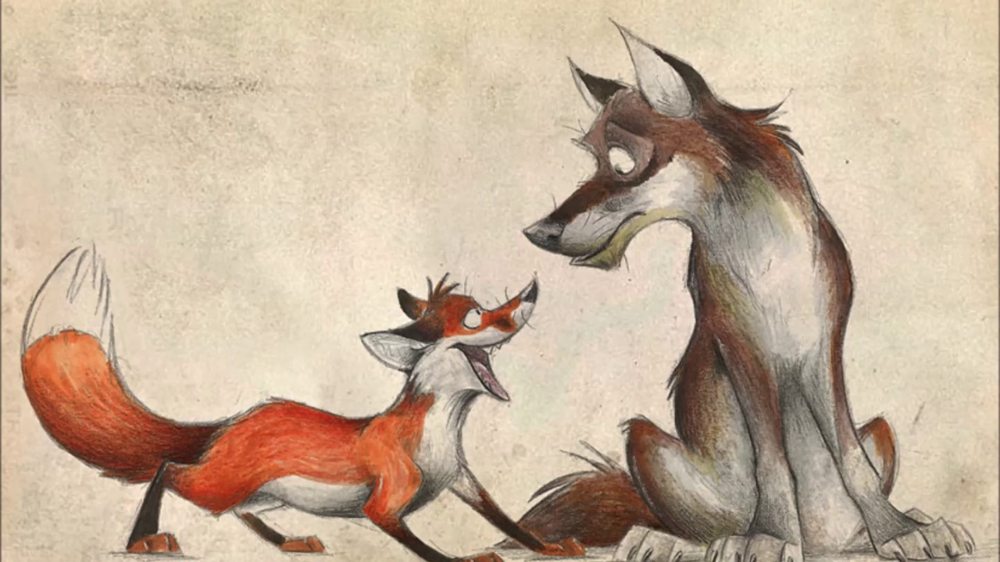
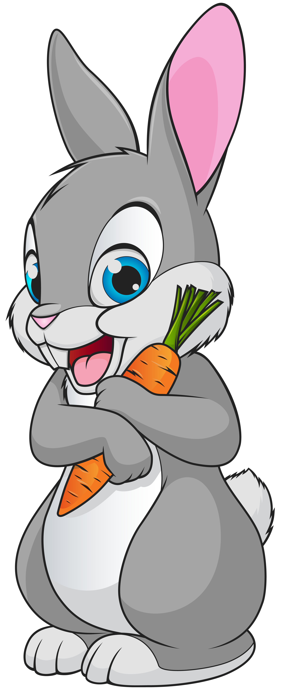
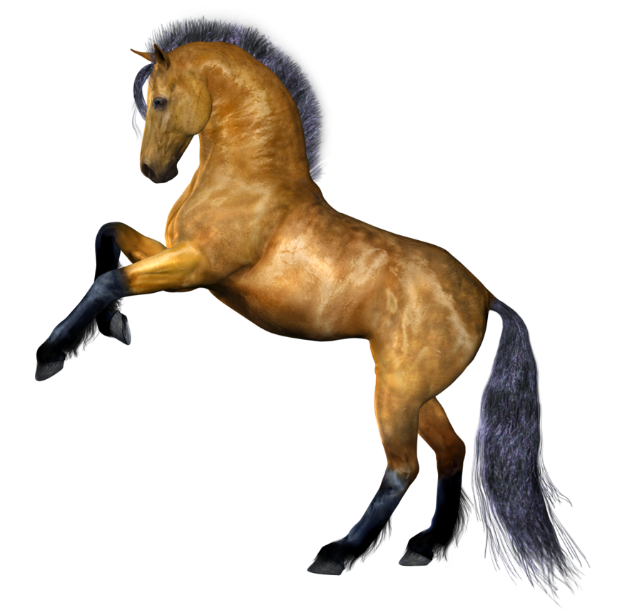
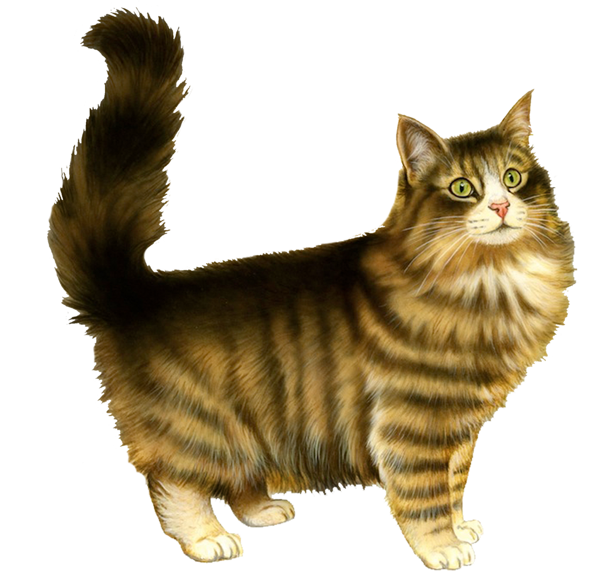

В русских пословицах и поговорках важное место отводится животному миру, опоэтизированному народной фантазией, ставшему частью человеческой жизни и вековой мудрости наших предков. В образах животных раскрываются представления о добре и зле, о правде и лжи, о достойном и недостойном человеке.
Названия диких животных часто употребляются в пословицах поговорках.Чаще всего встречаются волк, заяц, лиса. Например:
  Лидер пословиц - собака:
Одно из первых мест в народных изречениях принадлежит лошади.Популярность лошади вполне понятна, ведь конь был основой крестьянского хозяйства и транспорта.
О лошадях в большинстве изречений говорится с любовью и уважением:

Кот и кошка - частый персонаж фольклора, видимо, в связи с тем, что она жила в доме, на глазах хозяев. В образе кошки, кота чаще всего персонифицируются лень, желание вкусно поесть, улизнуть от ответственности за содеянное:
